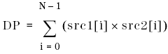
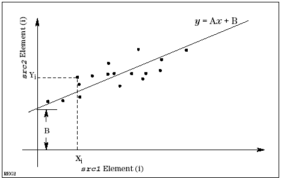

DSP_REG2
This API computes the dot-product (scalar or inner product of two vectors), regression coefficient, and regression constant between the elements of two specified arrays.
This API computes the dot product (DP), which is the sum of the products of the corresponding elements in src1 and src2. The dot product is calculated as follows:

where N is size.
This API also computes a straight regression line in accordance with the least-squares fit method, which calculates the expected mean of the src2 elements relative to the src1 elements. The calculations result in a regression line that can be expressed as follows:
y = A × x + B
where
- y is the expected src2 element and x is the src1 element.
- "A" is the regression coefficient, which is the slope of the regression line.
- "B" is the regression constant, which is the offset of the regression line.
The following figure shows a regression line calculated by DSP_REG2.

This API is defined in the header file /opt/hp93000/soc/prod_com/include/MAPI/libdsp.h.
Syntax
DSP_REG2(const ARRAY_I& src1, const ARRAY_I& src2,
DOUBLE *coefficient, DOUBLE *constant,
DOUBLE *product);
DSP_REG2(const INT *src1, const INT *src2,
DOUBLE *coefficient,
DOUBLE *constant, DOUBLE *product,
INT size);
DSP_REG2(const ARRAY_D& src1, const ARRAY_D& src2,
DOUBLE *coefficient, DOUBLE *constant,
DOUBLE *product);
DSP_REG2(const DOUBLE *src1, const DOUBLE *src2,
DOUBLE *coefficient, DOUBLE *constant,
DOUBLE *product, INT size);I/O |
Parameter |
Description / Range |
|---|---|---|
I |
src1 |
Source array |
I |
src2 |
Source array |
O |
coefficient |
Regression coefficient value within source arrays |
O |
constant |
Regression constant value within source arrays |
O |
product |
Dot product value within source arrays |
I |
size |
Number of elements to be processed 2 ≤ size ≤ 2097152 size ≤ (size of src1) size ≤ (size of src2) |
Note that the return value INT is Succeed or Failure (failure if the specified size is out of range).
Example
double array1[100], array2[100]; double coefficient, constant,product; . . DSP_REG2(const array1, const array2, &coefficient, &constant, &product, 100);
The dot product of array1 and array2 is calculated, and returned to the product. The regression coefficient and constant between array1 and array2 are calculated and returned to the coefficient and constant .